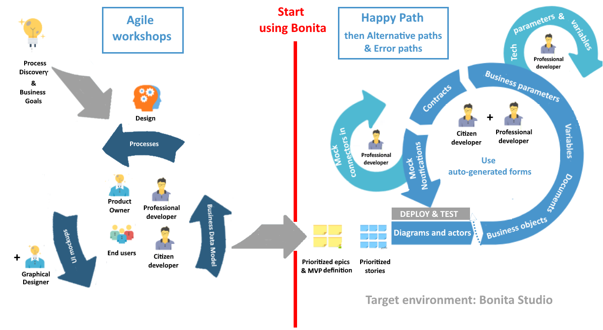

Réaliser une application basée sur l'automatisation des processus
Delphine Coille - Les 28 février, 1er et 15 mars 2023
Objectifs du TP
Quoi ? Comprendre la mise en oeuvre des concepts liés aux processus d'entreprise et à leur optimisation par automatisation
Comment ? 3 sessions pratiques de mise en application basées sur un exemple concret avec Bonita
Programme
Jour 1 - Les bases du projet d'automatisation de processus
- Méthodologie de projet
- Les BPMS et la solution Bonita
- Modélisation et automatisation
Programme
Jour 2 - Applications basées sur les processus
- Gestion des données
- L'interaction avec les utilisateurs
Programme
Jour 3 - L'intégration dans le système d'information
- La communication via les APIs
- Les extensions
- Les applications
- Déploiement
Avant de démarrer
- Assurez-vous d'avoir une JVM (Java 11 recommandée)
- Installez la dernière version du Studio
- Accès aux exercices
- Nous recommandons d'utiliser
 ou
ou  lors de vos développements
lors de vos développements
Le cycle d'exécution d'un projet d'optimisation de processus

La première itération
Projet d'automatisation de processus Bonita
Eléments de structure d'un projet

Applications basées sur l'automatisation des processus
Combiner différents processus ensemble dans le but de fournir une application métier riche et cohérente
Déployées et restituées dans un navigateur web ou mobile

Vous avez des exemples ?
Applications personnalisées

Applications Bonita : interfaces web de l'utilisateur et de l'administrateur
2 applications par défaut et 2 applications coeur de plateforme embarquées dans Bonita runtime
- Application utilisateur Bonita

- Application administrateur Bonita

- Application super-administrateur Bonita

- Répertoire d'applications

Application utilisateur Bonita
Application native de suivi des cas et tâches

Application administrateur Bonita
Application native d'administration et de suivi des processus

Application super administrateur
Application native d'administration avancée de la plateforme

Répertoire centralisé d'applications
Une URL unique centralisant toutes les applications accessibles par l'utilisateur
La solution Bonita
Plateforme open-source et extensible pour l'automatisation et l'optimisation des processus d'entreprise
 de code pour construire une application
de code pour construire une application
Nombreux modèles pour définir les applications
 Collaboration facilitée entre les équipes métier et techniques
Collaboration facilitée entre les équipes métier et techniques
 Suivi et optimisation de l'exécution des processus
Suivi et optimisation de l'exécution des processus
Composants de Bonita
Trois composants principaux :
- Bonita Studio, l'environnement de développement
- Bonita Runtime, l'environnement de production
- Bonita Continuous Delivery
 , l'environnement de déploiement continue des projets Bonita (Editions Souscription)
, l'environnement de déploiement continue des projets Bonita (Editions Souscription)
Studio: environnement de modélisation et collaboration
 |
|
IDE basé sur Eclipse
Nécessite l'utilisation d'une JVM (Embarquée dans Bonita Community)
Basé sur des modèles et wizards pour limiter le code
UI Designer: création de l'interface utilisateurs
 |
|
Bonita Runtime : le chef d'orchestre
Nécessite :
- Serveur d'application Java EE
- Base de données transactionnelle avec JDBC

Démarrer le projet dans Bonita Studio
- Un projet Bonita est un projet

- Les projets sont intégrés à un workspace en local ou à distance
- Les projets peuvent être partagés avec SVN ou Git depuis Bonita Studio
A vous !
Démarrer le projet : vue d'ensemble
Accès à la vue d'ensemble dès la création du projet

Introduction au BPMN
Notation standard pour la modélisation des processus
Les éléments essentiels :
 | Pool : un pool par processus |
 | Événement de début : le démarrage d'un processus |
 | Tâche humaine : quand un utilisateur est impliqué |
 | Tâche automatique/service : exécutée par le moteur |
 | Événement de fin : déclenche l'archivage du processus |
| → | Transition : utilisée pour lier les éléments entre eux |
Les portes logiques
3 types de portes logiques :
 | Exclusive |  |
 | Parallèle | |
 | Inclusive |
- Les conditions sont définies sur les transitions sortantes. Pas de conditions pour les portes parallèles
- Une bonne pratique consiste à utiliser les portes de manière symétrique pour améliorer la lisibilité
Exercice 1
Modélisation basique de processus
Si vous ne l'avez pas déjà fait, téléchargez les instructions et les corrections à partir de GitHub
https://dcoille.github.io/cours-IUT2/index.html
Automatiser les processus : les événements
Interviennent tout au long des processus
Asynchrones

Boundary event : déclenche un chemin alternatif
Les activités appelantes et sous-processus
Déclenche un sous-processus
Met le processus parent en attente
Les activités appelantes et sous-processus
Mapping des données

Les itérations
3 types d'itérations :
- Boucle standard
- Multi-instanciation en parallèle
- Multi-instanciation en séquence